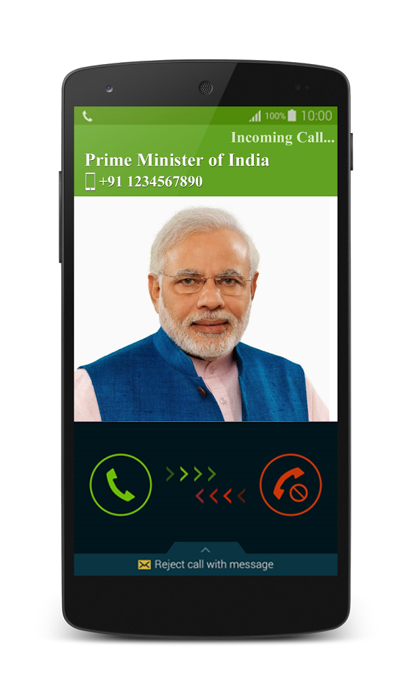

On one typical weekend, I was browsing my phone looking for some excitement and indeed I was not dissapointed. Out of no where, I recieved a notification from Facebook that someone was trying to add me as a friend. Out of curiousity I open the app to check it out. Surprisingly, I saw a that I have a friend request from a gorgous girl. Now, one thing about me is that I am a pretty cautious person. Well, one reason is that if you have somewhat background in technology you will have the tendency to have less trust with the internet. So the first thing I did is to investergate the profile. As I remember, I immediately saw a red flag. She had some asian name but seemed to be studying and working in France for quite a while. I have seen quite a few scam facebook profiles. While many of them are sloppy, for example, the account is just created recently, it has few friends with no to few posts. However this account is more sophisticated than that. It was pretty believable to me.
It has lots of friends. Decent posts throughout time. It is so funny also that there was 1 mutual friend between me and her. However, I am still not convince. Deep down I just want to actually see how these scammer get to there way. So just to make it short, I began talking to her for a while like normal.
On one typical weekend, I was browsing my phone looking for some excitement and indeed I was not dissapointed. Out of no where, I recieved a notifation from Facebook that someone was trying to add me as a friend. Out of curiousity I open the app to check it out. Surprisingly,
After a talking to the girl for a while, I am surprised that she has been using pretty good English. So a few things I know about these amateur scammer is that they usually use bad, short English sentences and they are very short on patience. Obviously she was trying to tell me how lonely she was and she wants to be with someone. You know, all the flirty stuff. So I played along, making up things like how I am so lonely too although I have too much money to spend. Oh I forgot to mention that I used google to searched for her image and the real person in the image is actually a celebrity somewhere in Thailand.
I finaly got kind of tired talking to this "girl" so I asked her the question. I asked her that I am so sad and lonely so would she agree to come here to spend time with me. I am willing to pay for everything. It stunned me knowing that she refused all of that stuff. I even offered to send her some money. This trigger my curiosity even more. What does this scammer want? Definitely not real love!
In the End...In the end, I found out something interesting. After the money offer, she tried to seduce me and lured me into online sexual stuff. She tried to tell me how "thirsty" she was and everything but I am not getting into the detail of that. It was a really fun converstation because I begin to quote some funny stuff from movie and clearly the person had no idea, but it is too long to be written here. Her main purpose was to get me into a sexual video chat and blackmail me afterward. However, I am glad I did not fall for any of that nonsense!
